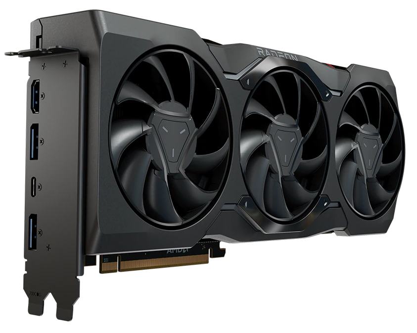

NEW RYZEN 7000 & RADEON 7000 SERIES

- Core count: 12
- Base Clock: 3.7GHz
- L3 Cache: 64MB
- Unlocked for overclocking: Yes
- Number of Threads: 24
- L1 Cache: 768KB
- Default TDP: 65W
- CPU Socket: AM5
- You can check more details at our CPU's page here
AMD Ryzen™ 9 7900

- Compute Units: 96
- Ray Accelerators: 96
- Boost Frequency: Up to 2500 MHz
- Peak Pixel Fill-Rate: Up to 480 GP/s
- Stream Processors: 6144
- Texture Units: 384
- Game Frequency: 2300MHz
- Transistor Count: 58 B
- You can check more details at our GPU's page here